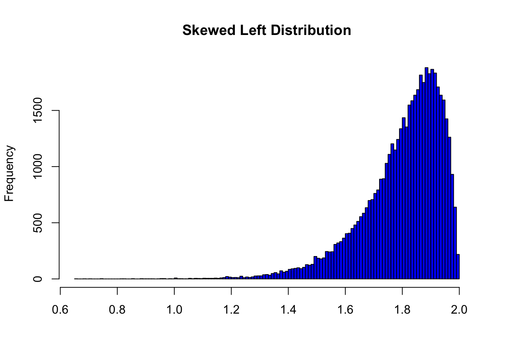

Descriptive statistics is also called
summary statistics, and as the name implies, is the
study of describing datasets.
Descriptive stats can only be applied to samples and not
populations. Why do you think that is?
Why can’t we use descriptive stats to make conclusions about a
population?
Some measures you may already be familiar with include the
mean and mode. What information is
captured by those numbers, and what information is lost?
Describing Qualitative Data
Examine the dataset icecream.csv on Google Classroom,
which is collected for the question:
“What is a high school student’s favorite ice cream flavor?”
Identify the population of the posed question.
Identify a feasible sampling frame.
Is this data ordinal or nominal? Explain.
Using your answer above, explain why it would not make
sense to find the mean ice cream flavor. Would it make sense to
find the mode?
Frequency Distributions
What is a frequency distribution?
How could we represent a frequency distribution in Python? Use
icecream.csv as an example.
One way of visualizing frequency distributions is by creating a
categorical bar chart. These are sometimes referred to
as Pareto charts (but not in this class.)
Categorical Bar Charts
Categorical bar chart of ice cream
flavors
What do the x and y axes
represent?
What information does this categorical bar chart
quickly tell us about the dataset?
What information from the original dataset is lost in this
chart?
Describing Quantitative Data
Let’s review penguins.csv; this time, we’ll look only at
the bill lengths of Gentoo penguins.
Write a Python file to read in penguins.csv and create
a list of Gentoo penguin bill lengths (or reuse code from before.) What
is the mean bill length?
It can be useful to visualize the frequency distribution of
quantitative data as well. One approach is to make a categorical bar
chart, with each different value as a category. Why is that not a good
idea?
Histograms
Histogram of Gentoo penguin bill
lengths
This is a histogram of Gentoo bill lengths.
What is a histogram? How is each bar labeled, and
what does the height of the bar represent?
Why is this a better approach than a categorical bar chart?
What would happen if we made the intervals bigger? Smaller?
Distribution Shape
Let’s look at something called a normal
distribution, which we will define formally in the future.
normal distribution
How would you describe the shape of this
distribution? What do you see?
Where is the mode of the distribution
(visually)?
What is the difference between a unimodal and a
bimodal distribution? What would a
bimodal distribution look like?

skewed distribution
The histogram above skews left, which means its
tail stretches very long to the left. What would a
right-skewed distribution look like?